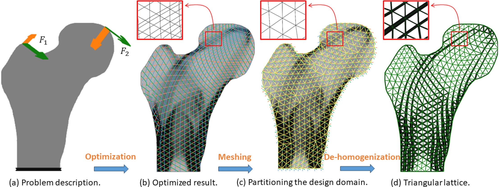

Design and Optimization of Functionally-graded Triangular Lattices for Multiple Loading Conditions
Computer Methods in Applied Mechanics and Engineering, 2024
| Junpeng Wang | Rüdiger Westermann | Xifeng Gao | Jun Wu |
| TU Munich | TU Munich | Lightspeed Studios | TU Delft |

Abstract
Aligning lattice infills with the principal stress directions in loaded objects is crucial for improving stiffness. However, this principle only works for a single loading condition, where the stress field in 2D is described by two orthogonal principal stress directions. In this paper, we introduce a novel approach for designing and optimizing triangular lattice structures to accommodate multiple loading conditions, i.e., multiple stress fields need to be considered. Our method comprises two main steps: homogenization-based topology optimization and geometry-based de-homogenization. To ensure geometric regularity of the triangular lattices, we propose a simplified version of the general rank-3 laminate and parameterize the design domain using equilateral triangles with unique edge thickness. During optimization, edge thicknesses and orientations are adjusted based on the homogenized properties of the lattice. Our numerical findings demonstrate that this simplification introduces only a slight decrease in stiffness of less than 5% compared to using the general rank-3 laminate, and results in lattice structures with compelling geometric regularity. For geometry-based de-homogenization, we adopt a field-aligned triangulation approach to generate a globally consistent triangle mesh in which each triangle is oriented according to the optimized orientation field. Our approach for handling multiple loading conditions, akin to de-homogenization techniques for single loading conditions, yields highly detailed, optimized and spatially varying lattice structures. The method is computationally efficient, as simulations and optimizations are conducted at a low-resolution discretization of the design domain. Furthermore, since our approach is geometry-based, obtained structures are encoded into a compact geometric format that facilitates downstream operations such as editing and fabrication.Keywords
Topology optimization; De-homogenization; Lattice structures; Multiple loading conditionsDownload
 |
Paper 6.6 MB |
Bibtex
@article{Wang2024CMAME-design,
title={Design and optimization of functionally-graded triangular lattices for multiple loading conditions},
author={Junpeng Wang and R\"{u}diger Westermann and Xifeng Gao and Jun Wu},
journal={Computer Methods in Applied Mechanics and Engineering},
volume={432},
pages={117335},
year={2024},
doi={https://doi.org/10.1016/j.cma.2024.117335},
publisher={Elsevier}
}